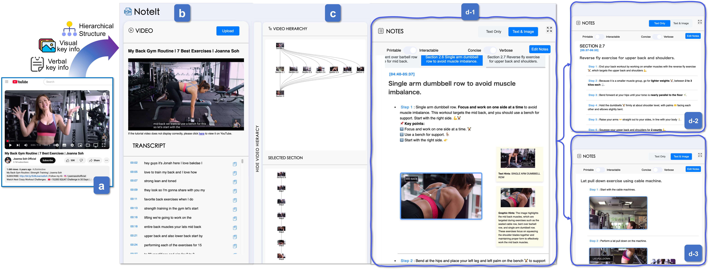
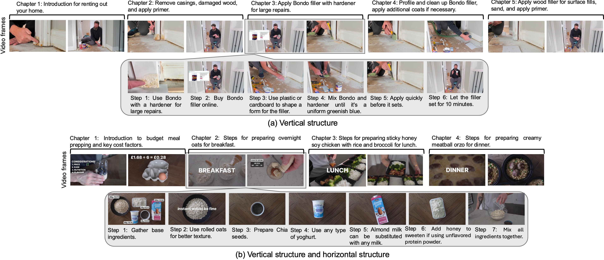
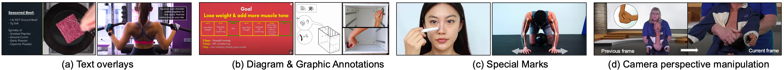
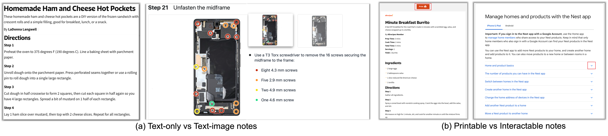
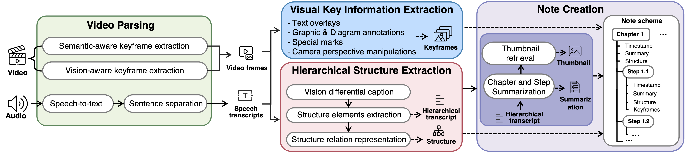
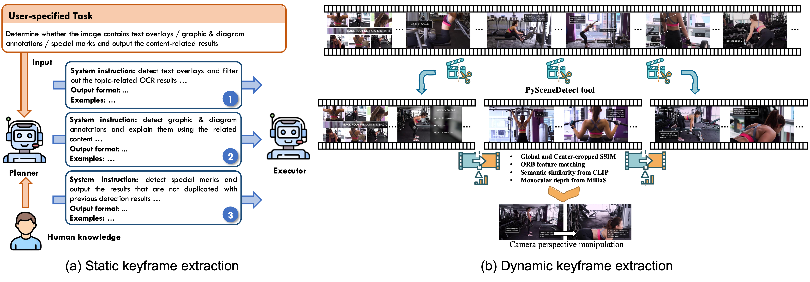
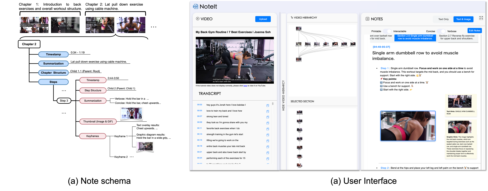
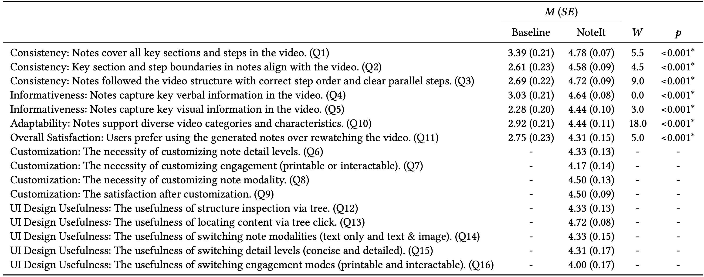

A System Converting Instructional Videos to Interactable Notes Through Multimodal Video Understanding
Design Space: A design space for generating interactive notes that maintain
structural consistency with the instructional videos and incorporate key verbal and visual information
across diverse instructional videos.
Notes Generation Pipeline: A novel notes generation pipeline that processes instructional videos to extract
hierarchical structures and multimodal key content, and systematically maps them into structured notes.
Interactive User Interface: An interactive user interface that enables users to upload instructional videos and
explore the generated notes with diverse presentation modalities, verbosity levels, and engagement modes.
Technical Evaluation and User Study: A comprehensive technical evaluation and a comparison user study (N=36).
Users often take notes for instructional videos to access key knowledge later without revisiting long videos. Automated note generation tools enable users to obtain informative notes efficiently.
However, notes generated by existing research or off-the-shelf tools fail to preserve the information conveyed in the original videos comprehensively,
nor can they satisfy users' expectations for diverse presentation formats and interactive features when using notes digitally.

Figure 1: Overview of NoteIt. (a) A user drags an instructional video from an online resource into NoteIt's web interface.
NoteIt processes the video and generates notes, showing (b) video hierarchy in chapter-level and step-level and (c) interactable notes. (d) Users can customize the note representation according to their preferences and needs.
We present NoteIt, a novel system that faithfully converts instructional videos into interactive notes.
NoteIt is designed to handle videos with flexible hierarchical content structures and diverse presentation modalities,
generating notes that maintain structural consistency and comprehensively capture key information.
Users can select the output format based on their preferences and usage scenarios.
Powered by MLLMs, NoteIt introduces a modular pipeline that first parses the input video to extract its hierarchical structure and key content presented in visual and verbal formats.
This parsed information is then transformed into a well-defined note scheme and rendered through a user-friendly, interactive interface.
Hierarchical Structure.
Given the analysis of instructional videos, we found that instructional videos typically have a vertical structure for sequential content presentation or a horizontal structure for parallel or alternative content presentation.

Figure 2: Hierarchical structure of instructional videos.
Multimodal Key Information.
Verbally, creators emphasize critical steps using voiceover narration, such as providing tips and warnings (e.g., precise temporal or quantitative details).
Visually, key information is reinforced through text overlays, visual cues (e.g., graphic & diagram annotations and special marks including circles, arrows, and lines) or camera perspective manipulation (e.g., shot transition for zoom-in or close-up).

Figure 3: Visual key information.
Characteristics of Notes
Diverse Presentation Modalities.
Notes vary in presentation modality, with some using text-only formats and others incorporating multimodal elements such as images or video clips.
Varying Content Verbosity.
Notes vary in their level of content verbosity. Some provide detailed step descriptions, including execution parameters, contextual cues, and possible variations,
while some of the notes offer concise descriptions, reducing steps to their essential components.
Different Engagement mode.
Notes commonly follow one of two engagement modes: printable or interactable. Printable notes present all content at once in a static, linear format.
In contrast, interactable notes adopt a dynamic format, revealing information progressively through features such as collapsible sections, hover-to-reveal terms, or clickable elements.

Figure 4: Different presentation modalities and engagement modes.
Design Goals
D1. Maintain note structure consistent with the original video.
The note generated should maintain the vertical and horizontal structures of the instructional video, accurately reflecting both sequential and parallel flows.
D2. Include both visual and verbal key information.
The notes should capture verbal key information (e.g., tips, warnings, and precise instructions from narration) and visual key information (e.g., text overlays, graphic and diagram annotations, special marks, and camera perspective manipulations).
D3. Support interaction based on user preferences.
The note-generation system should offer multiple options, including modality (text-only or text-image/GIF pairs), content verbosity (concise or detailed), and engagement mode (printable or interactive).
D4. Scale across diverse instructional videos.
The system should be scalable and adaptable without relying on handcrafted rules. It should automatically generate notes tailored to each video, enabling broad applicability and meeting the needs of diverse users.
System Overview
NoteIt contains five modules: (1) video parsing that preprocesses video to extract video frames without redundancy and audio to extract speech transcripts; (2) hierarchical structure extraction to extract and represent structures in chapter and step levels;
(3) key information extraction to select key frames with various presentations of visual information; (4) note creation to complete the notes content and represent it as the designed note schema; (5) interactable UI for user customization.

Figure 5: System overview of NoteIt.
Hierarchical Structure Extraction
This modulae aims to extract the hierarchical structure in a chapter level and step level, and represent them as a directed acyclic graph (DAG), respectively, to clearly show their vertical and horizontal structure.
It sequentially performs vision differential caption, structure elements extraction, and structure relation representation.
This modulae extract frames representing visual key information from filtered images.
It presents an agentic workflow to extract the static key frames (text overlays, graphic and diagram annotations, and special marks) and leverage a suit of vision and language models to extract the dynamic key frames (camera perspective manipulation), respectively.

Figure 7:Keyframe extraction pipeline.
Interactive Interface
NoteIt extracts keyframes (text overlays, graphic & diagram annotations, special marks and camera perspective manipulations), structure (chapter and step), summarization (chapter and step), and thumbnails, and they are integrated into a unique note scheme.
The defined note schema represents all the extracted information of the instructional video in a clear structure to benefit the following construction of interactable UI.

Figure 8: The designed note schema of each video and the corresponding interactive interface.
The interface consists of three main components: video player, video hierarchy and notes. Users can customize the note's modality (text-only
or text-image), engagement level (printable or interactable), and detail level (concise or verbose).
In interactable mode, parallel sections are collapsed into slides, and users can navigate through them using a slider with tabs displaying section summaries.
In printable mode, both the vertical and horizontal sections are displayed in sequence. Furthermore, in interactable and text-image mode, a GIF is included to demonstrate each step.
In verbose mode, the step notes are more detailed, and any text or graphical hints are directly displayed.
Evaluation Results
User Study
Participants rated NoteIt significantly higher than the baseline across all design goals and evaluation metrics. Specifically, NoteIt provides consistent hierarchical structure aligned with the video,
captures key verbal and visual information in the video, and provides necessary and useful customization. Moreover, NoteIt supports diverse video categories and content.
NoteIt are also recognized by participants to have high satisfaction and usability.

Table 2: The result of statistic analysis. We report the mean 𝑀 and standard error 𝑆𝐸 for the baseline tool (NoteGPT) and our NoteIt, and
the test statistic 𝑊 and 𝑝 value of the Wilcoxon signed-rank test. All tests were two-sided, where p-value < 0.05 indicates the
statistical significance..
Demo Video
Acknowledgement
We sincerely thank NYU VisionX for the nice project page template.
BibTeX
@article{zhao2025noteit,
title={{NoteIt: A System Converting Instructional Videos to Interactable Notes Through Multimodal Video Understanding}},
author={Running Zhao, Zhihan Jiang, Xinchen Zhang, Chirui Chang, Handi Chen, Weipeng Deng, Luyao Jin, Xiaojuan Qi, Xun Qian, Edith C.H. Ngai},
journal={The 2025 ACM Symposium on User Interface Software and Technology},
doi={10.1145/3746059.3747626},
year={2025}
}